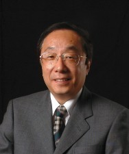

谷口雅樹 教授

| 専門分野 | 固体物性 |
|---|---|
| 現在の研究課題 | 課題名： 半導体、磁性体の電子状態 Electronic States of Semiconductors and Magnetic Materials |
| 担当講義 | 1. 卒業研究 2. 研究指導 3. 光物性 4. 光物性セミナー 5. 物理科学特別研究 |
| 科学研究費補助金 | 基盤研究(C）2004年 新規シリコンネットワークを持つジシリサイド薄膜単結晶の合成と電子構造の研究 基盤研究(C）2003年 光電子・逆光電子分光実験によるチタン酸化物単結晶の金属絶縁体転移 の研究 特定領域研究2003年 充填スクッテルダイト構造に創出する新しい量子多電子状態の展開 基盤研究(B）2003年 軟Ｘ線内殻吸収線二色性による軽い遷移金属酸化物の軌道秩序の直接観察 基盤研究(B）2001年 軟Ｘ線内殻吸収線二色性による軽い遷移金属酸化物の軌道秩序の直接観察 特別推進研究2001年 複合自由度機能物質研究拠点 基盤研究(C）2000年 正・逆スピン角度分解光電子分光による遍歴強磁性マンガン化合物の電子構造の研究（継続） 基盤研究(C）1999年 正・逆スピン角度分解光電子分光による遍歴強磁性マンガン化合物の電子構造の研究 基盤研究(C）1998年 軟 X 線共鳴逆光電子分光による非占有 d, f 電子状態の研究（継続） 基盤研究(C）1997年 軟 X 線共鳴逆光電子分光による非占有 d, f 電子状態の研究（継続） 基盤研究(C)（一般）1996年 軟 X 線共鳴逆光電子分光による非占有 d, f 電子状態の研究 基盤研究(C)（一般）1994年 逆光電子分光装置のための高分解能光検出器の試作研究（継続） 基盤研究(C)（一般）1993年 逆光電子分光装置のための高分解能光検出器の試作研究 基盤研究(C)（一般）1992年 半磁性半導体の逆光電子分光（継続） 基盤研究(C)（一般）1991年 半磁性半導体の逆光電子分光（継続） |
| 国際学会 (Invite) | - 2009 - - 2008 - |
| 国内学会 (Invite) |